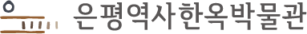
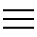

HOME
은평구청

박물관소개
이용안내
전시안내
교육안내
유물안내
박물관소식
한韓문화체험시설
인사말
박물관 소개
박물관 연혁
조직 및 업무
관람 안내
시설 안내
편의 시설
오시는 길
상설 전시
특별 전시
온라인 전시
교육 안내
교육 신청
온라인 영상
소장품 검색
소장품 소개
유물 기증
공지사항
언론보도
박물관 간행물
너나들이 센터
셋이서 문학관
삼각산금암미술관
전시 안내
교육 안내
